การตั้งค่าผู้ใช้#
หน้าการตั้งค่าผู้ใช้ช่วยให้คุณปรับแต่งประสบการณ์การใช้งาน Backend.AI WebUI ได้ คุณสามารถเข้าถึงได้โดยคลิกที่ไอคอนคนที่มุมขวาบนและเลือกเมนูการตั้งค่า จากที่นี่ คุณสามารถกำหนดค่าต่างๆ เช่น โหมดธีม ภาษา การแจ้งเตือนเดสก์ท็อป การจัดการคู่คีย์ SSH สคริปต์เชลล์ และคุณสมบัติการทดลอง นอกจากนี้คุณยังสามารถ ตรวจสอบบันทึกฝั่งไคลเอนต์ เซสชันเข้าสู่ระบบที่เชื่อมโยงกับบัญชีของคุณ และประวัติการเข้าสู่ระบบได้อีกด้วย
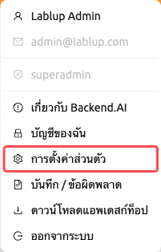
หน้านี้แบ่งออกเป็นสี่แท็บ ได้แก่ ทั่วไป, บันทึก, เซสชันเข้าสู่ระบบ และ ประวัติการเข้าสู่ระบบ
แท็บทั่วไป#
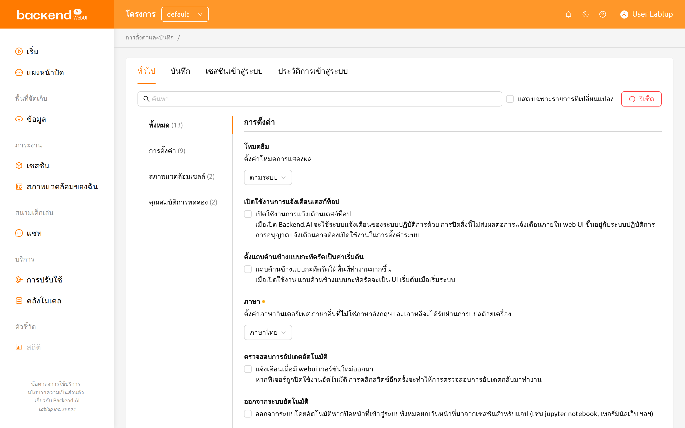
แท็บทั่วไปประกอบด้วยรายการตั้งค่าทั้งหมดที่จัดกลุ่มเป็น การตั้งค่า, สภาพแวดล้อมเชลล์ และ คุณสมบัติการทดลอง รายการทางด้านซ้ายช่วยให้คุณ ข้ามไปยังกลุ่มใดกลุ่มหนึ่งได้ หรือเลือก ทั้งหมด เพื่อดูการตั้งค่าทุก รายการพร้อมกัน
การค้นหาและกรองการตั้งค่า#
ที่ด้านบนของพื้นที่ตั้งค่า คุณสามารถใช้แถบค้นหาเพื่อค้นหาการตั้งค่า เฉพาะตามชื่อได้อย่างรวดเร็ว พิมพ์คำสำคัญ แล้วจะแสดงเฉพาะการตั้งค่าที่ ตรงกันเท่านั้น
คุณยังสามารถเลือกช่อง แสดงเฉพาะรายการที่เปลี่ยนแปลง เพื่อกรองรายการ และแสดงเฉพาะการตั้งค่าที่ถูกแก้ไขจากค่าเริ่มต้น ซึ่งเป็นประโยชน์สำหรับ การตรวจสอบการปรับแต่งทั้งหมดที่คุณได้ทำไว้
การรีเซ็ตการตั้งค่าเป็นค่าเริ่มต้น#
หากต้องการคืนค่าการตั้งค่าทั้งหมดเป็นค่าเริ่มต้น ให้คลิกปุ่ม รีเซ็ต ที่ด้านบนของพื้นที่ตั้งค่า กล่องยืนยันจะปรากฏขึ้นก่อนทำการรีเซ็ต พร้อมคำเตือนว่าการกระทำนี้ไม่สามารถยกเลิกได้
การตั้งค่าแต่ละรายการยังมีปุ่มรีเซ็ตของตัวเอง (แสดงเมื่อค่าแตกต่างจาก ค่าเริ่มต้น) ซึ่งช่วยให้คุณรีเซ็ตการตั้งค่าเดียวโดยไม่กระทบการตั้งค่าอื่น
โหมดธีม#
ตั้งค่าโหมดการแสดงผลสำหรับ WebUI คุณสามารถเลือกจาก:
- ตามระบบ: ปรับตามการตั้งค่าโหมดสว่าง/มืดของระบบปฏิบัติการโดยอัตโนมัติ
- โหมดสว่าง: ใช้ธีมสว่างเสมอ
- โหมดมืด: ใช้ธีมมืดเสมอ
ธีม#
ธีมคือชุดสีที่ Backend.AI นำไปใช้กับ WebUI ทั้งหมด ทั้งในโหมดสว่างและโหมดมืด เมื่อการเลือกธีมพร้อมใช้งาน การตั้งค่า ธีม จะให้คุณเลือกธีมที่มาพร้อมกับ ผลิตภัณฑ์ได้ดังนี้:
- Default: รูปลักษณ์มาตรฐานที่สร้างจากสีที่กำหนดไว้สำหรับการติดตั้งของคุณ
- Stained
- Glass
- Reverie
- Bliss
ธีมที่เลือกจะถูกนำไปใช้ทันที และการเลือกจะถูกจดจำไว้สำหรับบัญชีของคุณ คลิกปุ่มรีเซ็ตของการตั้งค่านี้เพื่อกลับไปใช้ Default
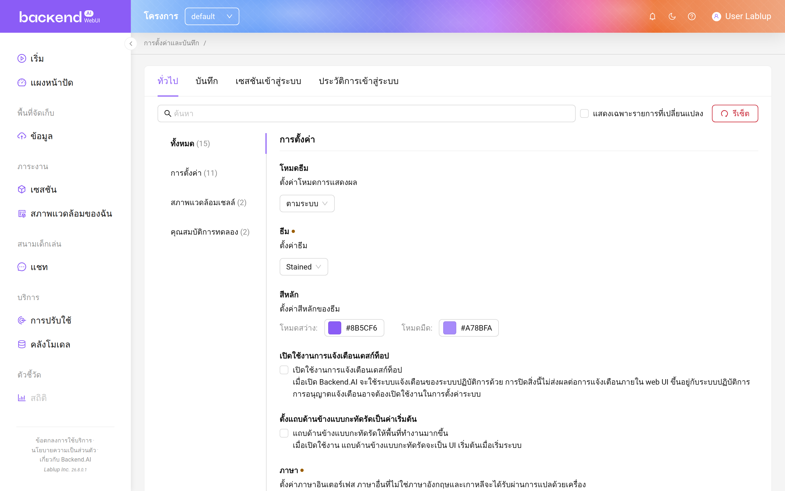
การตั้งค่า ธีม จะแสดงเฉพาะเมื่อผู้ดูแลระบบเปิดใช้งานการปรับแต่งธีม และมีธีมมากกว่าหนึ่งธีมสำหรับการติดตั้งของคุณ ดังนั้นรายการธีมที่ให้บริการ อาจแตกต่างจากรายการข้างต้น
สีหลัก#
สีหลัก จะแทนที่สีเน้นหลักของธีมที่เลือกไว้ ระบบมีตัวเลือกสีสองชุด ชุดหนึ่งสำหรับ โหมดสว่าง และอีกชุดสำหรับ โหมดมืด เพื่อให้แต่ละโหมดการแสดงผลใช้สีเน้นที่แตกต่างกันได้
- คลิกแถบสีของโหมดที่คุณต้องการเปลี่ยน
- เลือกสีจากตัวเลือกสี หรือป้อนค่าเลขฐานสิบหก
- สีเน้นใหม่จะถูกนำไปใช้กับ WebUI ทันที
หากล้างค่าตัวเลือกสี โหมดนั้นจะกลับไปใช้สีที่ธีมที่เลือกไว้กำหนดให้ การคลิกปุ่มรีเซ็ตของการตั้งค่านี้จะล้างค่าทั้งสองโหมดและคืนค่าเป็นสีของธีมเอง
เช่นเดียวกับการตั้งค่า ธีม รายการ สีหลัก จะแสดงเฉพาะเมื่อผู้ดูแลระบบ เปิดใช้งานการปรับแต่งธีมเท่านั้น
เปิดใช้งานการแจ้งเตือนเดสก์ท็อป#
เปิดหรือปิดใช้งานคุณสมบัติการแจ้งเตือนเดสก์ท็อป เมื่อเปิดใช้งาน Backend.AI จะใช้ระบบการแจ้งเตือนของระบบปฏิบัติการนอกเหนือจากการแจ้งเตือน ภายในแอป การปิดใช้งานนี้จะไม่ส่งผลต่อการแจ้งเตือนภายใน WebUI ขึ้นอยู่กับ ระบบปฏิบัติการ อาจจำเป็นต้องเปิดใช้งานสิทธิ์การแจ้งเตือนในการตั้งค่าระบบ
ตั้งแถบด้านข้างแบบกะทัดรัดเป็นค่าเริ่มต้น#
เมื่อเปิดใช้งานตัวเลือกนี้ แถบด้านซ้ายจะถูกแสดงในรูปแบบกะทัดรัด (ความกว้างที่แคบกว่า) การเปลี่ยนแปลงของตัวเลือกจะมีผลเมื่อมีการรีเฟรช เบราว์เซอร์ หากคุณต้องการเปลี่ยนประเภทของแถบด้านข้างทันทีโดยไม่ต้องรีเฟรช หน้า ให้คลิกที่ไอคอนทางซ้ายสุดที่ด้านบนของหัวเรื่อง
ภาษา#
ตั้งค่าภาษาที่แสดงบน UI ตัวเลือกภาษาเป็นดร็อปดาวน์ที่ค้นหาได้ ประกอบด้วย 20 ภาษา: English, 한국어, brasileiro, 简体中文, 繁體中文, Français, Suomalainen, Deutsch, Ελληνική, Bahasa Indonesia, Italiano, 日本語, Монгол, Polski, Português, русский, Español, ภาษาไทย, Türkçe และ Tiếng Việt คุณสามารถพิมพ์ในดร็อปดาวน์เพื่อกรองและค้นหาภาษาได้อย่างรวดเร็ว
ภาษาที่ตรงกับค่าเริ่มต้นของเบราว์เซอร์จะมีป้าย "(Default)" แสดงอยู่ข้างชื่อ ภาษาอื่นๆ นอกเหนือจากภาษาอังกฤษและภาษาเกาหลีจะให้บริการผ่านการแปลด้วย เครื่อง บางรายการใน UI อาจไม่ได้อัปเดตภาษาจนกว่าหน้าจะถูกรีเฟรช
บางรายการที่แปลแล้วอาจถูกทำเครื่องหมายเป็น __NOT_TRANSLATED__ ซึ่งบ่งชี้
ว่ารายการนั้นยังไม่ได้รับการแปลสำหรับภาษานั้น เนื่องจาก Backend.AI WebUI
เป็นโอเพ่นซอร์ส ใครก็ตามที่ต้องการช่วยปรับปรุงการแปลสามารถมีส่วนร่วมได้:
https://github.com/lablup/backend.ai-webui.
เก็บข้อมูลเซสชันเข้าสู่ระบบไว้ระหว่างการออกจากระบบ#
การตั้งค่านี้ใช้ได้เฉพาะในแอป Electron (เดสก์ท็อป) เท่านั้น
เมื่อเปิดใช้งาน แอป WebUI จะเก็บข้อมูลเซสชันเข้าสู่ระบบปัจจุบันไว้ สำหรับการเปิดแอปครั้งถัดไป หากปิดตัวเลือกนี้ ข้อมูลการเข้าสู่ระบบจะถูก ล้างทุกครั้งที่ออกจากระบบ
ตรวจสอบการอัปเดตอัตโนมัติ#
หน้าต่างแจ้งเตือนจะปรากฏขึ้นเมื่อตรวจพบเวอร์ชัน WebUI ใหม่ ทำงานได้เฉพาะ ในสภาพแวดล้อมที่มีการเข้าถึงอินเทอร์เน็ตเท่านั้น หากคุณสมบัตินี้ถูก ปิดใช้งานโดยอัตโนมัติ การคลิกปุ่มสลับอีกครั้งจะกลับมาตรวจสอบการอัปเดต
ออกจากระบบอัตโนมัติ#
ออกจากระบบโดยอัตโนมัติเมื่อหน้า Backend.AI WebUI ทั้งหมดถูกปิด ยกเว้นหน้า ที่สร้างขึ้นเพื่อเรียกใช้แอปใน session (เช่น Jupyter Notebook, Web Terminal เป็นต้น)
ข้อมูลคู่คีย์ของฉัน#
ผู้ใช้แต่ละคนมีคีย์คู่อย่างน้อยหนึ่งคู่ คุณสามารถดูคีย์การเข้าถึงและ คีย์ลับได้โดยคลิกปุ่ม 'กำหนดค่า' จำไว้ว่าคีย์คู่การเข้าถึงหลักมีเพียงหนึ่งคู่ เท่านั้น
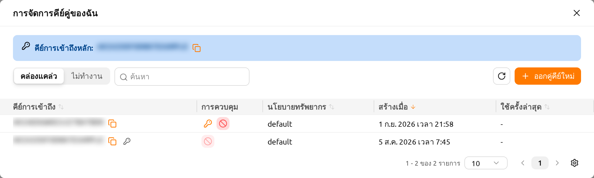
ที่ด้านบนของกล่องโต้ตอบ แบนเนอร์ คีย์การเข้าถึงหลัก จะแสดงคีย์การเข้าถึง หลักปัจจุบันของคุณ คลิกไอคอนคัดลอกที่อยู่ข้างๆ เพื่อคัดลอกคีย์ไปยังคลิปบอร์ด
การเรียกดูคู่คีย์ของคุณ#
กล่องโต้ตอบจะแสดงรายการคู่คีย์ของคุณในตาราง ใช้ตัวควบคุมเหนือตารางเพื่อ จำกัดสิ่งที่แสดง:
- คล่องแคล่ว / ไม่ทำงาน สลับ: สลับระหว่างการดูคู่คีย์ที่ใช้งานอยู่และ คู่คีย์ที่ถูกปิดใช้งาน
- ตัวกรอง: กรองรายการตาม คีย์การเข้าถึง หรือ นโยบายทรัพยากร
- การเรียงลำดับคอลัมน์: เรียงลำดับตารางตาม คีย์การเข้าถึง, นโยบายทรัพยากร, สร้างเมื่อ หรือ ใช้ครั้งล่าสุด โดยคลิกที่ ส่วนหัวคอลัมน์
- การแบ่งหน้า: เลื่อนไปมาระหว่างหน้าเมื่อคุณมีคู่คีย์มากกว่าที่จะแสดงได้ ในหน้าเดียว
ตารางประกอบด้วยคอลัมน์ต่อไปนี้:
- คีย์การเข้าถึง: คีย์การเข้าถึงของคู่คีย์ คีย์การเข้าถึงหลักของคุณจะถูก ทำเครื่องหมายด้วยไอคอนกุญแจ คลิกไอคอนคัดลอกเพื่อคัดลอกคีย์การเข้าถึง
- การควบคุม: การดำเนินการที่ใช้ได้สำหรับแต่ละคู่คีย์ (ดูด้านล่าง)
- นโยบายทรัพยากร: นโยบายทรัพยากรที่ใช้กับคู่คีย์
- สร้างเมื่อ: เวลาที่สร้างคู่คีย์
- ใช้ครั้งล่าสุด: เวลาที่ใช้คู่คีย์ครั้งล่าสุด
- แก้ไขเมื่อ: เวลาที่แก้ไขคู่คีย์ครั้งล่าสุด คอลัมน์นี้ถูกซ่อนไว้โดย ค่าเริ่มต้น คุณสามารถแสดงได้ผ่านการตั้งค่าคอลัมน์ของตาราง
การออกคู่คีย์ใหม่#
คลิกปุ่ม ออกคู่คีย์ใหม่ เพื่อสร้างคู่คีย์ใหม่ หลังจากออกคู่คีย์แล้ว กล่องโต้ตอบ ข้อมูลรับรองคู่คีย์ จะปรากฏขึ้น โดยแสดงข้อมูลรับรองใหม่ เพียงครั้งเดียวเท่านั้น
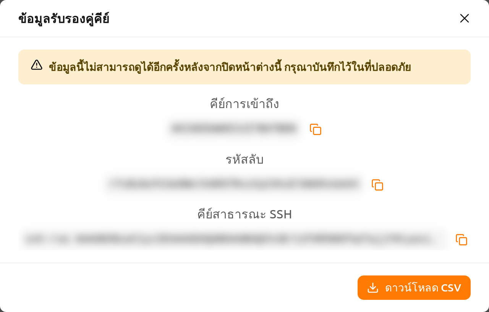
กล่องโต้ตอบจะแสดงค่าต่อไปนี้ พร้อมปุ่มคัดลอกสำหรับแต่ละค่า:
- คีย์การเข้าถึง
- รหัสลับ
- คีย์สาธารณะ SSH
คลิก ดาวน์โหลด CSV เพื่อบันทึกข้อมูลรับรองลงในไฟล์
"ข้อมูลนี้ไม่สามารถดูได้อีกครั้งหลังจากปิดหน้าต่างนี้ กรุณาบันทึกไว้ในที่ ปลอดภัย" รหัสลับจะแสดงเพียงครั้งเดียวเท่านั้น คัดลอกหรือดาวน์โหลด CSV ก่อน ที่คุณจะปิดกล่องโต้ตอบ เนื่องจากไม่มีวิธีเรียกดูรหัสลับในภายหลัง
การจัดการคู่คีย์ที่ใช้งานอยู่#
สำหรับคู่คีย์ที่ใช้งานอยู่แต่ละคู่ คอลัมน์ การควบคุม มีการดำเนินการ ต่อไปนี้:
ตั้งเป็นหลัก: กำหนดให้คู่คีย์นี้เป็นคีย์การเข้าถึงหลักของคุณ จะมีกล่อง ยืนยันปรากฏขึ้นก่อนที่การเปลี่ยนแปลงจะถูกนำไปใช้ คีย์การเข้าถึงหลักที่ใช้งาน อยู่ในปัจจุบันจะไม่แสดงการดำเนินการนี้
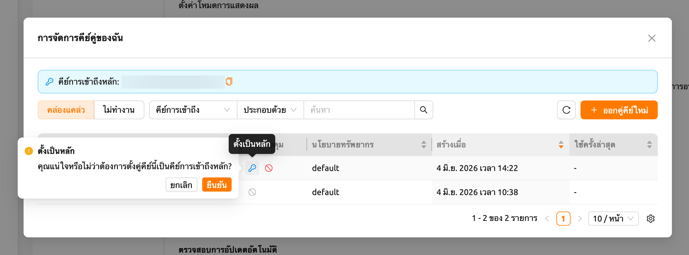
รูปที่ 19.6 ปิดการใช้งาน: ปิดใช้งานคู่คีย์เพื่อไม่ให้สามารถใช้งานได้อีกต่อไป จะมี กล่องยืนยันปรากฏขึ้นก่อนที่คู่คีย์จะถูกปิดใช้งาน คีย์การเข้าถึงหลักไม่สามารถ ปิดใช้งานได้ โปรดเปลี่ยนไปใช้คีย์อื่นก่อน ("ไม่สามารถปิดใช้งานคีย์การเข้าถึง หลักได้ โปรดเปลี่ยนไปใช้คีย์อื่นก่อน")
เมื่อคีย์การเข้าถึงหลักถูกเปลี่ยน (เช่น หลังจากออกคู่คีย์ใหม่และตั้งให้เป็น คีย์หลัก) WebUI จะแสดงการแจ้งเตือน จำเป็นต้องเข้าสู่ระบบใหม่ พร้อมข้อความ "คีย์การเข้าถึงหลักได้เปลี่ยนแล้ว โปรดเข้าสู่ระบบอีกครั้งเพื่อใช้การ เปลี่ยนแปลง" โปรดออกจากระบบและเข้าสู่ระบบอีกครั้งเพื่อให้คีย์การเข้าถึงหลักใหม่ ถูกนำไปใช้กับเซสชันของคุณ
การจัดการคู่คีย์ที่ไม่ได้ใช้งาน#
สลับไปที่มุมมอง ไม่ทำงาน เพื่อจัดการคู่คีย์ที่ถูกปิดใช้งาน คู่คีย์ที่ไม่ได้ ใช้งานแต่ละคู่มีการดำเนินการต่อไปนี้:
- คืนค่า: เปิดใช้งานคู่คีย์อีกครั้งเพื่อให้สามารถใช้งานได้ จะมีกล่องยืนยัน ปรากฏขึ้นก่อนที่คู่คีย์จะถูกคืนค่า
- ลบคู่คีย์: ลบคู่คีย์อย่างถาวร
การลบคู่คีย์ ไม่สามารถย้อนกลับได้ คู่คีย์ที่ถูกลบแล้วไม่สามารถกู้คืนได้ เพื่อป้องกันการลบโดยไม่ตั้งใจ คุณต้องพิมพ์ ลบถาวร ในช่องยืนยันก่อนที่จะ อนุญาตให้ลบ
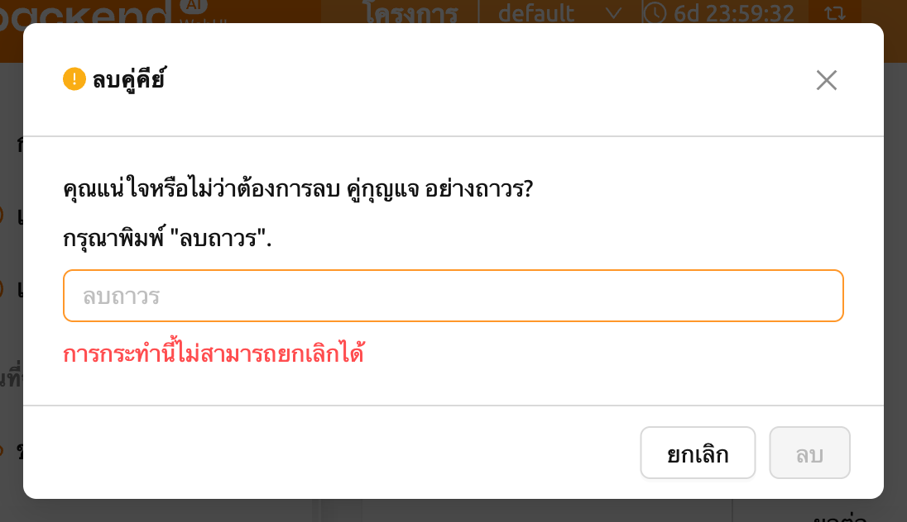
การจัดการคู่คีย์ SSH#
เมื่อใช้แอป WebUI คุณสามารถสร้างการเชื่อมต่อ SSH/SFTP ไปยังเซสชันการ
คำนวณได้โดยตรง เมื่อคุณสมัครใช้งาน Backend.AI คู่คีย์สาธารณะจะถูกจัดเตรียม
ให้ หากคุณคลิกปุ่มทางขวาของส่วนการจัดการคู่คีย์ SSH กล่องโต้ตอบต่อไปนี้จะ
ปรากฏขึ้น คีย์สาธารณะ SSH ที่มีอยู่จะแสดงอยู่ใต้หัวข้อ
คีย์สาธารณะปัจจุบัน คลิกปุ่มคัดลอกที่อยู่ข้างหัวข้อเพื่อคัดลอกคีย์
คุณสามารถอัปเดตคู่คีย์ SSH ได้โดยคลิกปุ่ม สร้าง ที่ด้านล่างของกล่อง
โต้ตอบ คีย์สาธารณะ/ส่วนตัว SSH จะถูกสร้างแบบสุ่มและจัดเก็บเป็นข้อมูลผู้ใช้
โปรดทราบว่าคีย์ลับจะไม่สามารถตรวจสอบได้อีกหากไม่ได้บันทึกด้วยตนเองทันที
หลังจากการสร้าง
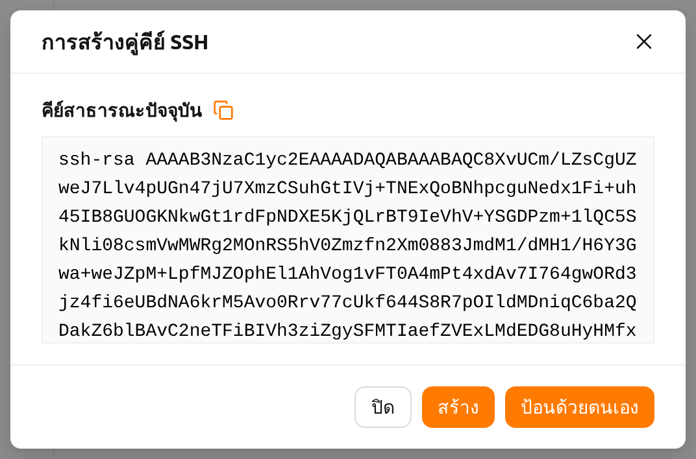
Backend.AI ใช้คู่คีย์ SSH ที่อิงตาม OpenSSH บน Windows คุณอาจต้องแปลงเป็น คีย์ PPK
Backend.AI WebUI รองรับการเพิ่มคู่คีย์ SSH ของคุณเองเพื่อให้ความยืดหยุ่น
เช่น การเข้าถึงที่เก็บข้อมูลส่วนตัว หากต้องการเพิ่มคู่คีย์ SSH ของคุณเอง
ให้คลิกปุ่ม ป้อนด้วยตนเอง จากนั้นคุณจะเห็นพื้นที่ข้อความสองช่อง
คือ คีย์สาธารณะ และ คีย์ส่วนตัว

กรอกคีย์และคลิกปุ่ม บันทึก เมื่อคู่คีย์ได้รับการยอมรับ ข้อความยืนยันจะ
ปรากฏขึ้นและกล่องโต้ตอบจะปิดลง หากเซิร์ฟเวอร์ปฏิเสธคู่คีย์ เช่น เมื่อรูปแบบ
ของคีย์ไม่ถูกต้องหรือคีย์สาธารณะกับคีย์ส่วนตัวไม่ตรงกัน กล่องโต้ตอบจะยังคง
เปิดอยู่และแสดงข้อความข้อผิดพลาดที่เซิร์ฟเวอร์ส่งกลับมา เพื่อให้คุณแก้ไขคีย์
แล้วบันทึกอีกครั้ง เมื่อลงทะเบียนคู่คีย์แล้ว คุณสามารถเข้าถึง session ของ
Backend.AI โดยใช้คีย์ของคุณเองได้
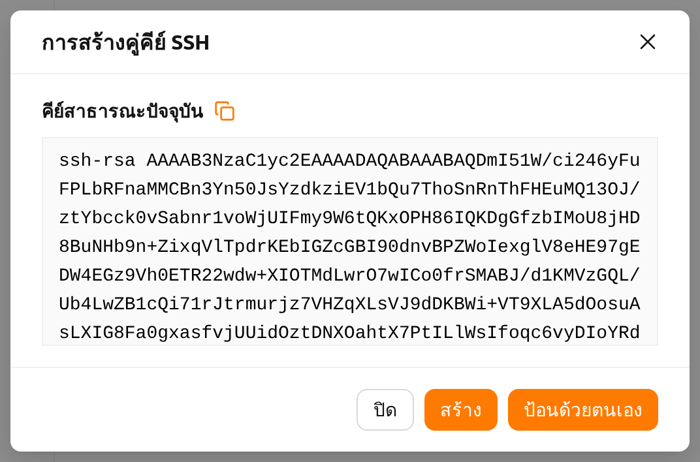
ขีดจำกัดการอัพโหลดไฟล์สูงสุดพร้อมกัน#
จำกัดจำนวนไฟล์ที่สามารถอัพโหลดพร้อมกันผ่าน File Explorer คุณสามารถเลือกค่า ระหว่าง 2 ถึง 5 ค่าเริ่มต้นคือ 2
แก้ไขสคริปต์บูตสแตรป#
หากคุณต้องการเรียกใช้สคริปต์ครั้งเดียวหลังจากที่เซสชันการคำนวณของคุณ เริ่มต้นขึ้น ให้เขียนเนื้อหาที่นี่
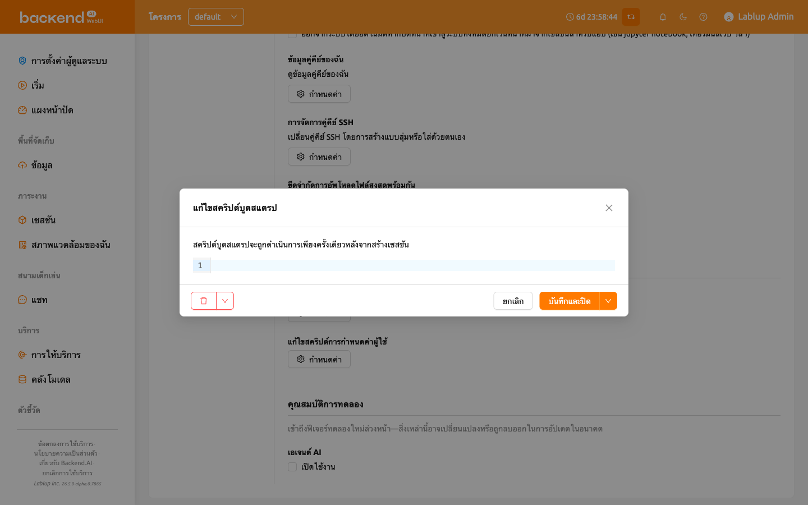
เซสชันการคำนวณจะอยู่ในสถานะ PREPARING จนกว่าสคริปต์บูตสแตรปจะทำงานเสร็จ
เนื่องจากผู้ใช้ไม่สามารถใช้ session ได้จนกว่าจะเป็นสถานะ RUNNING หาก
สคริปต์มีงานที่ใช้เวลานาน ควรลบออกจากสคริปต์บูตสแตรปและเรียกใช้ในแอป
เทอร์มินัลแทน
แก้ไขสคริปต์การกำหนดค่าผู้ใช้#
คุณสามารถเขียนสคริปต์การกำหนดค่าเพื่อแทนที่ค่าเริ่มต้นในเซสชันการคำนวณ
ไฟล์เช่น .bashrc, .tmux.conf.local, .vimrc เป็นต้น สามารถปรับแต่งได้
สคริปต์จะถูกบันทึกสำหรับผู้ใช้แต่ละคนและสามารถใช้ได้เมื่อต้องการงาน
อัตโนมัติบางอย่าง ตัวอย่างเช่น คุณสามารถแก้ไขสคริปต์ .bashrc เพื่อลงทะเบียน
นามแฝงคำสั่งหรือระบุว่าไฟล์บางไฟล์จะถูกดาวน์โหลดไปยังตำแหน่งที่กำหนดเสมอ
ใช้เมนูแบบเลื่อนลงที่ด้านบนเพื่อเลือกประเภทของสคริปต์ที่คุณต้องการเขียน
(.bashrc, .zshrc, .tmux.conf.local, .vimrc หรือ .Renviron)
แล้วเขียนเนื้อหา คลิกปุ่ม บันทึกและปิด เพื่อบันทึกสคริปต์และปิดกล่องโต้ตอบ
หรือเปิดลูกศรที่อยู่ข้างๆ แล้วเลือก บันทึกโดยไม่ปิด เพื่อบันทึกโดยยังคง
เปิดกล่องโต้ตอบไว้ ปุ่มทางด้านซ้ายของกล่องโต้ตอบใช้สำหรับลบสคริปต์หรือ
รีเซ็ตการเปลี่ยนแปลงที่ยังไม่ได้บันทึก
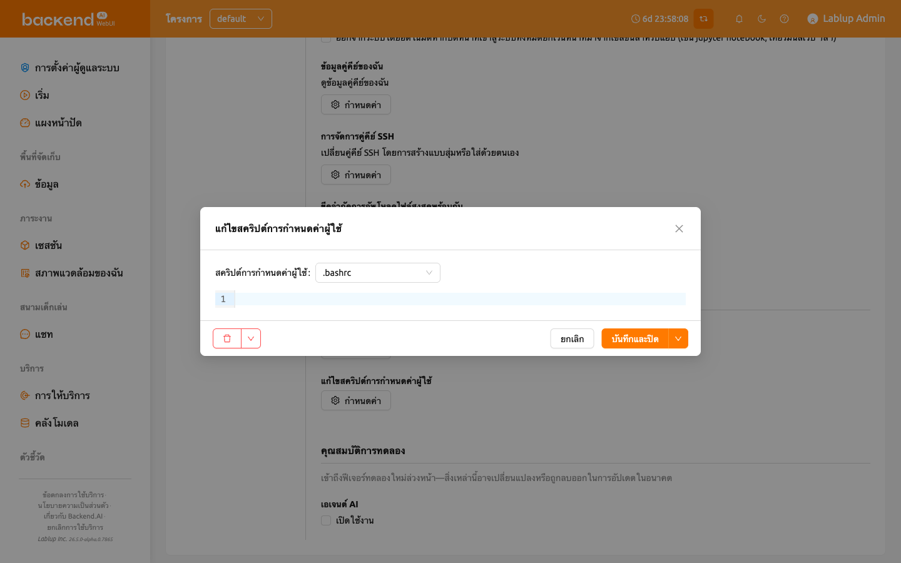
คุณสมบัติการทดลอง#
เข้าถึงฟีเจอร์ทดลองใหม่ล่วงหน้า สิ่งเหล่านี้อาจเปลี่ยนแปลงหรือถูกลบออก ในการอัปเดตในอนาคต แต่ละฟีเจอร์เปิดใช้งานได้ด้วยช่องทำเครื่องหมาย เปิดใช้งาน
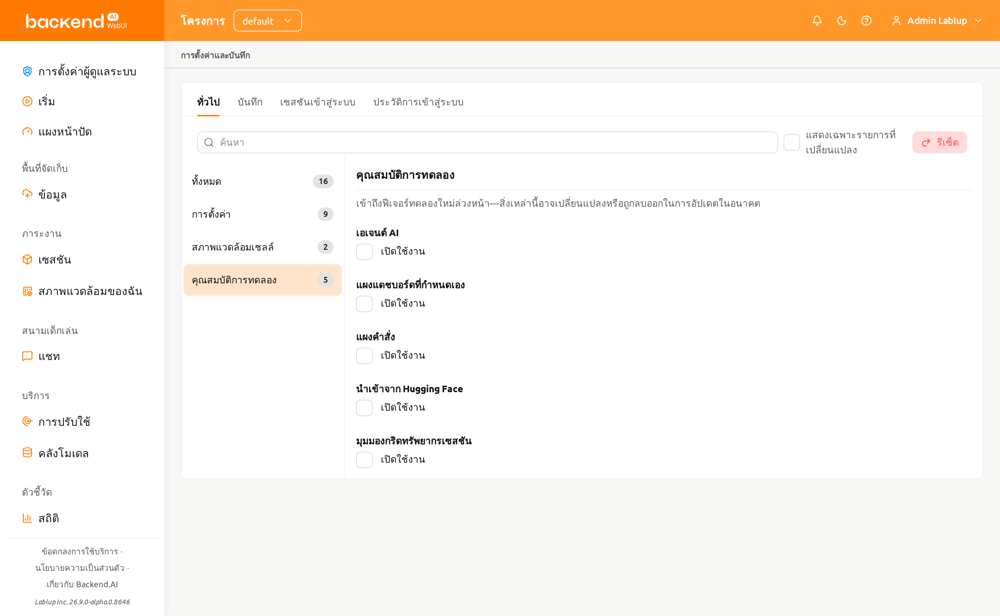
- เอเจนต์ AI: เปิดใช้งานฟีเจอร์เอเจนต์ AI ซึ่งให้ความสามารถ AI แบบ เอเจนต์ภายใน WebUI เมื่อเปิดใช้งาน ฟังก์ชันเอเจนต์ AI จะพร้อมใช้งาน ในเซสชันของคุณ
- แผงแดชบอร์ดที่กำหนดเอง: ให้คุณเพิ่มแผงที่กำหนดเองของคุณเองลงในหน้า แดชบอร์ดได้ แต่ละแผงจะแสดงแหล่งข้อมูลที่คุณเลือก ซึ่งถูกกรองด้วยเงื่อนไข ที่คุณกำหนด แผงเหล่านี้จะแสดงเฉพาะเมื่อเปิดใช้งานฟีเจอร์นี้เท่านั้น หากปิดใช้งานในภายหลัง แผงของคุณจะถูกซ่อนไว้โดยไม่ถูกลบ และจะกลับมาเหมือนเดิม เมื่อเปิดใช้งานอีกครั้ง ดูวิธีเพิ่มและจัดการแผงได้ที่หัวข้อ แผงที่กำหนดเอง
- แผงคำสั่ง: เพิ่มปุ่ม ค้นหา ลงในแถบด้านบน และเปิดใช้งานปุ่มลัด
Ctrl-K(Cmd-Kบน Mac) ซึ่งจะเปิดแผงสำหรับค้นหาหน้า แท็บ และรายการ การตั้งค่า รวมถึงเรียกใช้การดำเนินการด่วน เช่น การสลับโหมดหน้าจอหรือ การเปิดการแจ้งเตือน ดูรายละเอียดได้ที่หัวข้อ ค้นหา - นำเข้าจาก Hugging Face: เพิ่มแท็บ นำเข้าโมเดล Hugging Face ลงในกล่องโต้ตอบ เริ่มจาก URL บนหน้าเริ่มต้น เพื่อให้คุณนำเข้าโมเดล จาก Hugging Face ไปยังโฟลเดอร์โมเดลได้โดยตรง แท็บนี้จะแสดงเฉพาะเมื่อ การติดตั้งของคุณรองรับการปรับใช้โมเดลด้วยเท่านั้น
- มุมมองกริดทรัพยากรเซสชัน: เพิ่มปุ่มสลับ โหมดมุมมอง ระหว่าง ตาราง และ กริด เหนือรายการเซสชันในหน้าเซสชันและหน้า Admin Session เมื่อเลือก กริด ระบบจะแสดงเซลล์หนึ่งเซลล์ต่อหนึ่งเซสชันแทนตาราง โดยสีของเซลล์แสดงอัตราการใช้ทรัพยากรแบบเรียลไทม์ของเซสชันนั้น ปุ่มสลับนี้จะปรากฏเฉพาะเมื่อเปิดใช้งานฟีเจอร์นี้เท่านั้น สำหรับตัวควบคุมของกริดเอง ดูที่ การแสดงผลรายการเซสชัน
แท็บบันทึก#
แสดงข้อมูลรายละเอียดของบันทึกต่างๆ ที่บันทึกไว้ในฝั่งไคลเอนต์ คุณสามารถ ไปที่หน้านี้เพื่อหาข้อมูลเพิ่มเติมเกี่ยวกับข้อผิดพลาดที่เกิดขึ้น คุณสามารถค้นหาและกรองบันทึกข้อผิดพลาด อัปเดตรายการ และล้างบันทึกทั้งหมด โดยคลิกปุ่ม ล้างบันทึก ที่มุมขวาบน
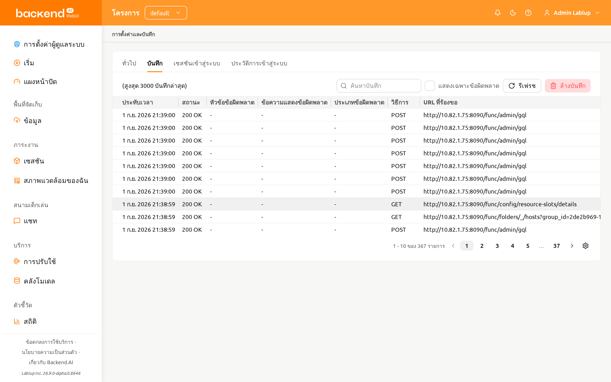
หากคุณล็อกอินอยู่เพียงหน้าหนึ่ง การคลิกที่ปุ่ม รีเฟรช อาจไม่แสดงผล อย่างถูกต้อง หน้าบันทึกเป็นการรวมคำขอไปยังเซิร์ฟเวอร์และการตอบสนอง จากเซิร์ฟเวอร์ หากหน้าปัจจุบันคือหน้าบันทึก มันจะไม่ส่งคำขอใดๆ ไปยัง เซิร์ฟเวอร์นอกเหนือจากการรีเฟรชหน้าตามที่ระบุ หากต้องการตรวจสอบว่าบันทึก กำลังถูกจัดเรียงอย่างถูกต้อง กรุณาเปิดหน้าอื่นและคลิกปุ่ม รีเฟรช
หากคุณต้องการซ่อนหรือแสดงคอลัมน์บางอย่าง ให้คลิกที่ไอคอนเฟืองที่มุมขวา ล่างของตาราง จากนั้นกล่องโต้ตอบจะปรากฏขึ้นเพื่อให้คุณเลือกคอลัมน์ที่ ต้องการเห็น
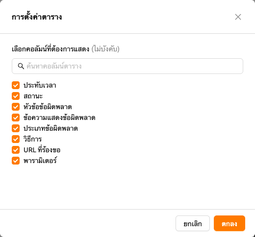
แท็บเซสชันเข้าสู่ระบบ#
แท็บเซสชันเข้าสู่ระบบจะแสดงรายการเซสชันเข้าสู่ระบบที่เชื่อมโยงกับบัญชีของคุณ อยู่ในขณะนี้ โดยมีหนึ่งรายการสำหรับทุกที่ที่คุณลงชื่อเข้าใช้ Backend.AI ใช้แท็บนี้เพื่อตรวจสอบว่าบัญชีของคุณถูกใช้งานที่ใดบ้าง และเพื่อออกจากระบบเซสชันที่คุณไม่ต้องการใช้อีกต่อไป
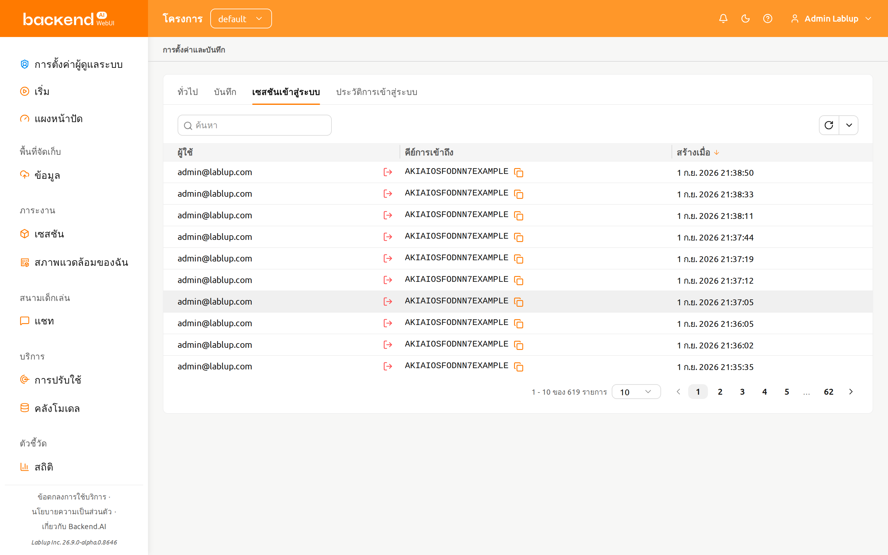
ตารางประกอบด้วยคอลัมน์ต่อไปนี้:
- ผู้ใช้: ที่อยู่อีเมลของบัญชีที่เป็นเจ้าของเซสชันเข้าสู่ระบบนั้น
- คีย์การเข้าถึง: คีย์การเข้าถึงที่เซสชันเข้าสู่ระบบใช้ยืนยันตัวตน คลิกไอคอนคัดลอกเพื่อคัดลอกคีย์
- สร้างเมื่อ: เวลาที่สร้างเซสชันเข้าสู่ระบบ คลิกที่ส่วนหัวคอลัมน์เพื่อเรียงลำดับตามคอลัมน์นี้
การกรองเซสชันเข้าสู่ระบบ#
ใช้ตัวกรองเหนือตารางเพื่อจำกัดรายการที่แสดง:
- คีย์การเข้าถึง: แสดงเฉพาะเซสชันเข้าสู่ระบบที่คีย์การเข้าถึง มีข้อความที่คุณป้อนอยู่
- สร้างเมื่อ: แสดงเฉพาะเซสชันเข้าสู่ระบบที่สร้างขึ้นหลัง (หรือก่อน) วันที่และเวลาที่คุณเลือก
ใช้ตัวควบคุมการแบ่งหน้าด้านล่างตารางเพื่อเลื่อนไปมาระหว่างหน้า และเปลี่ยนจำนวนแถวที่แสดงต่อหนึ่งหน้า
การเพิกถอนเซสชันเข้าสู่ระบบ#
แต่ละแถวมีการดำเนินการ เพิกถอนเซสชัน อยู่ข้างที่อยู่อีเมลในคอลัมน์ ผู้ใช้
- คลิก เพิกถอนเซสชัน ในแถวที่คุณต้องการยุติ
- ตรวจสอบกล่องยืนยันซึ่งแสดงคีย์การเข้าถึงของเซสชันเข้าสู่ระบบนั้น
- คลิก เพิกถอน
รายการจะโหลดใหม่และแสดงข้อความ "เพิกถอนเซสชันเข้าสู่ระบบสำเร็จ" หากไม่สามารถเพิกถอนเซสชันเข้าสู่ระบบได้ จะแสดงข้อความ "ไม่สามารถเพิกถอนเซสชันเข้าสู่ระบบได้" แทน
การเพิกถอนเซสชันเข้าสู่ระบบจะทำให้เซสชันนั้นออกจากระบบทันที หากคุณเพิกถอนเซสชันเข้าสู่ระบบที่กำลังใช้งานอยู่ คุณจะต้องเข้าสู่ระบบใหม่
แท็บประวัติการเข้าสู่ระบบ#
แท็บประวัติการเข้าสู่ระบบจะแสดงความพยายามเข้าสู่ระบบที่บันทึกไว้สำหรับบัญชี ของคุณ ทั้งการลงชื่อเข้าใช้ที่สำเร็จ ความพยายามที่ล้มเหลว และเหตุการณ์ของเซสชันเข้าสู่ระบบ เช่น การออกจากระบบหรือการหมดอายุ แท็บนี้เป็นแบบอ่านอย่างเดียว และไม่มีการดำเนินการใดๆ บนแถว
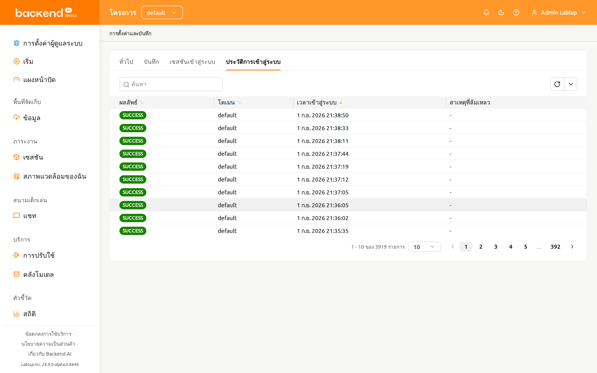
ตารางประกอบด้วยคอลัมน์ต่อไปนี้:
- ผลลัพธ์: ผลของความพยายามเข้าสู่ระบบ แสดงเป็นแท็กที่แยกด้วยสี คุณสามารถเรียงลำดับตามคอลัมน์นี้ได้
- โดเมน: โดเมนที่ใช้ในการเข้าสู่ระบบ คุณสามารถเรียงลำดับตามคอลัมน์นี้ได้
- เวลาเข้าสู่ระบบ: เวลาที่บันทึกความพยายามเข้าสู่ระบบ คุณสามารถเรียงลำดับตามคอลัมน์นี้ได้
- สาเหตุที่ล้มเหลว: รายละเอียดเพิ่มเติมที่รายงานสำหรับความพยายามที่ล้มเหลว
หากไม่มีรายละเอียดจะแสดงเป็น
-
ค่าผลลัพธ์จะแสดงตามที่เซิร์ฟเวอร์รายงานทุกประการ (ตัวอย่างเช่น SUCCESS
หรือ FAILED_INVALID_CREDENTIALS) และไม่มีการแปล
ค่าผลลัพธ์#
| ผลลัพธ์ | สี | ความหมาย |
|---|---|---|
| SUCCESS | เขียว | การลงชื่อเข้าใช้สำเร็จ |
| FAILED_INVALID_CREDENTIALS | แดง | ที่อยู่อีเมลหรือรหัสผ่านไม่ถูกต้อง |
| FAILED_USER_INACTIVE | แดง | บัญชีไม่ได้อยู่ในสถานะใช้งาน |
| FAILED_BLOCKED | แดง | การลงชื่อเข้าใช้ถูกบล็อก |
| FAILED_PASSWORD_EXPIRED | แดง | รหัสผ่านของบัญชีหมดอายุแล้ว |
| FAILED_REJECTED_BY_HOOK | แดง | การลงชื่อเข้าใช้ถูกปฏิเสธโดยฮุกฝั่งเซิร์ฟเวอร์ |
| FAILED_SESSION_ALREADY_EXISTS | แดง | มีเซสชันเข้าสู่ระบบของบัญชีนี้อยู่แล้ว |
| LOGOUT | เทา | เซสชันเข้าสู่ระบบสิ้นสุดลงจากการออกจากระบบ |
| REVOKED_BY_ADMIN | เหลือง | ผู้ดูแลระบบเพิกถอนเซสชันเข้าสู่ระบบ |
| REVOKED_BY_USER | เทา | คุณเพิกถอนเซสชันเข้าสู่ระบบด้วยตนเอง |
| EVICTED | เหลือง | เซิร์ฟเวอร์ยกเลิกเซสชันเข้าสู่ระบบ |
| EXPIRED | เทา | เซสชันเข้าสู่ระบบหมดอายุ |
การกรองประวัติการเข้าสู่ระบบ#
ใช้ตัวกรองเหนือตารางเพื่อจำกัดรายการที่แสดง:
- ผลลัพธ์: แสดงเฉพาะรายการที่มีผลลัพธ์ตามที่คุณเลือกจากรายการค่าข้างต้น
- โดเมน: แสดงเฉพาะรายการที่โดเมนมีข้อความที่คุณป้อนอยู่
- เวลาเข้าสู่ระบบ: แสดงเฉพาะรายการที่บันทึกไว้หลัง (หรือก่อน) วันที่และเวลาที่คุณเลือก
ใช้ตัวควบคุมการแบ่งหน้าด้านล่างตารางเพื่อเลื่อนไปมาระหว่างหน้า และเปลี่ยนจำนวนแถวที่แสดงต่อหนึ่งหน้า